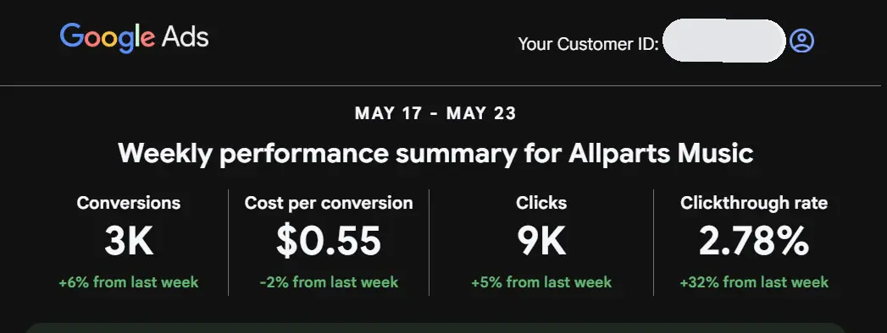
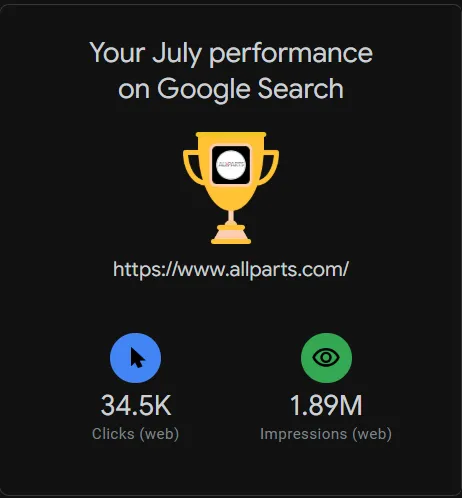

As a marketing professional, I have successfully managed and optimized various marketing campaigns to drive
brand awareness, customer engagement, and revenue growth. My expertise includes digital marketing strategies,
social media management, content creation, email marketing, and data analysis. I have a proven track record of
delivering measurable results through targeted campaigns and innovative marketing techniques.
This page showcases key marketing analytics and performance metrics from the websites, brands, and campaigns I created and managed. It highlights
essential data points such as page views, unique visitors, traffic sources, engagement times, and impressions, which I use to evaluate audience behavior and guide strategic decision making.
By monitoring patterns in user activity, growth over
time, and the effectiveness of different acquisition channels, I’m able to optimize content, improve visibility, and drive meaningful, revenue-focused results.
Additionally, I track the revenue generated from my campaigns, the growth of new users acquired, and the success of my Google Ads, social and email strategies. As you will see in the screenshots below, one of the websites I built, in keeping with all of the websites I build, has a Quality Score of "exceptional" labeled as "A Top Quality Store" by Google. You will also see screenshots proving nearly 2 million impressions on Google Search in 1 month, 11.6K transactions from my Google Ad in 1 week, $89.9K from a spend of only $6K
To see some examples of my marketing campaigns, banners, and ads that led to all of these successful metrics, please visit my Marketing Assets page.

